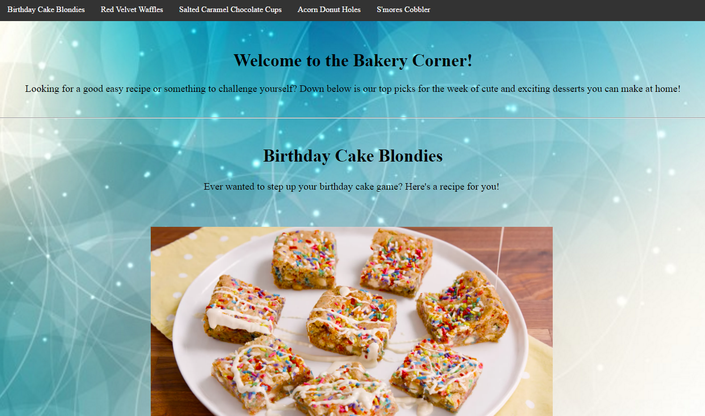

Best Work
Some of my best work consists of a few websites I have created throughout my time in this class. Below includes
my first ever website and my latest one beside this one, my club page website for the computer science club!
Baby Animals Webpage:
On this page I learned the very basics with
web design and tossed them all on this page
and learned new stuff while I was at it!
Table Webpage:
When we were working on how to insert
tables I found out something interesting with
the pictures, they move along with the page!
Didn't know they did that!

Baking Corner Webpage:
After some time I eventually became familiar
with the basic coding and started adding tables
with my basic work and ended up making a
really beautiful recipe page!
Computer Science Webpage:
For my last project before this one we were assigned
to make a club webpage for a club of our choice. I
decided to make one for our Computer Science Club,
or 'We Wear Khakis' for it's actual name!